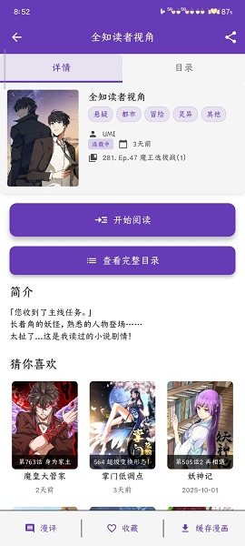

Colamanga 这几年是怎么一步一步长成现在这样的
从离线漫画阅读器到带云同步和推荐的完整平台，我用了好几年 Colamanga，亲眼看着它的优先级在迭代里逐渐清晰——团队一直在死磕什么、什么一直没动过，这篇文章慢慢捋。
现在这版，它是什么样
打开colamanga官网现在展示的版本，Colamanga 首页就是一排分类标签和最新更新卡片，点进去能直接搜也能按分类翻。书架同步在云端，换设备登一下手机号收藏列表就回来了，离线下载的章节在阅读器里横滑竖滑随你设——这套体验放在漫画阅读器里已经不算粗糙了。
但我记得它最早不是这样的。

它从哪起步的
我去翻了一下colamanga文档，里面没有提早期版本号和迭代历史，但从文档覆盖的功能范围反推，Colamanga 至少跨过了三个阶段。
第一阶段是纯工具期：就是一个能搜漫画、能存本地收藏的阅读器。这个阶段的产品几乎不可能有"账号"这个东西——没有云同步，换手机书架就没了，离线下载占满存储还得手动清。样本文档里反复提到的"更新后数据丢失怎么办"，恰恰说明早期用户吃够了没有云的亏，才会在后来的版本里把同步这块做扎实。
第二阶段是平台化期：引入账号、云同步、多设备登录这一整套东西。这个阶段是 Colamanga 变化最大的拐点——从"一个 App"变成"一个账户体系下的漫画服务"。手机号注册、验证码登录、第三方账号绑定、云端保存书架和阅读进度，这一整套动作不是随便加几个接口就能搞定的，后端架构得跟着重构。我没有见过这个阶段发布的具体版本号，但从样本文档里"云同步"出现频率来看，它肯定是某个版本集中加进去的——用户反馈最多的痛点被打包解决了。
第三阶段是精细化期：阅读器设置、权限说明、搜索别名识别、分类筛选、下载管理这些边角能力一个个补齐。样本文档里那篇"搜索不到漫画怎么办"列了六招，其中专门有一条说"尝试别名和译名"——这不是搜索功能刚出来时就有的，肯定是早期用户反馈太多"我搜不到东京食尸鬼但同事能搜到东京喰种"之后，团队才把别名匹配加进去的。
版本迭代的痕迹还能在权限申请上看到：样本文档列出的权限里有"访问 SD 卡文件系统"和"请求安装应用包"，这些都是 Android 版本升级时才需要重新适配的权限——说明团队一直在跟进系统层面的变化，不是做一版就扔那不管了。想要体验最新版的朋友可以从官方下载拿到安装包。
从迭代节奏看他们在死磕什么
如果把 Colamanga 当成一家小团队的作品来看，迭代轨迹能看出明显的优先级排序。
他们一直在死磕的两件事：搜索体验和数据安全。
搜索这块，从"六招排查搜不到"能反推它遇到过的问题——名称匹配不全、分类筛选遗漏、漫画源偶尔下线。团队不是简单地加个搜索框就完事了，而是在版本里逐步叠加：别名匹配、关键词拆分、分类兜底、漫画源健康检查。这一套组合拳不是一个 changelog 能做完的，应该是跨了好几个版本。
数据安全这块更明显：云同步上线之后，紧接着就是"更新后数据丢失怎么办"这种 FAQ 被写进文档。说明云同步刚上的时候肯定出过一些兼容性问题（旧版本升级、不同 Android 版本之间的权限差异），团队一边补漏洞一边写排查文档，直到同步成功率稳定下来。
他们一直没怎么动的：界面风格和广告策略。
样本文档里没提界面大改版的事情，首页布局从"分类标签 + 最新更新"这个骨架来看也没换过。漫画阅读器的翻页模式、亮度调节这些基础能力在早期版本就定好了，后面只是微调参数。至于广告，样本文档里完全没出现相关内容——要么是没加广告，要么是加得非常克制。
这两种选择背后可能是同一个逻辑：团队把有限的人力砸在核心体验上，不折腾不花哨的东西。
预判：照这个路线下一步大概率是什么样
从这几年的迭代规律推，Colamanga 接下来应该会在三个方向继续。
第一，推荐算法会更重。样本文档里提到"已登录用户解锁完整行为画像和智能推荐"，但没展开推荐具体长什么样——这说明推荐功能已经有了但还比较初级。如果云同步的数据积累到一定规模，下一步大概率是个性化推送、相似作品推荐这类。
第二，社区功能会逐步增强。样本文档在"为什么需要账号"那个表格里把"社区互动"列为登录后解锁的能力，但后面章节里完全没提社区具体有什么——这是典型的"留了接口但没填内容"。如果团队要往平台化走，评论区、用户晒单、漫画评分这些功能迟早会补。
第三，漫画源管理会越来越透明。样本文档里提到"漫画源服务器临时故障导致搜索不可用"这种情况，说明 Colamanga 背后不止一个漫画源。未来版本里可能会把漫画源状态直接展示给用户，或者允许用户手动切换源。
但这些都只是从迭代规律推的，不是官方计划。
一点个人感受
我用 Colamanga 的时间不算特别长，但每隔几个月更新一次就能感觉到变化——不是那种翻天覆地的换肤改版，而是搜漫画变快了、书架同步更稳了、偶尔遇到的小 bug 在下个版本里悄悄没了。这种产品节奏很像一个小团队在稳扎稳打：先把用户抱怨最多的坑填上，再往前走一小步，不搞大跃进。
如果它能保持这个节奏，我觉得短期内不会出什么大问题。真正需要担心的反而是那种"突然宣布要搞大改版"的时刻——很多产品就是在那次"大改版"里把积累的好体验搞丢了。希望 Colamanga 别走到那一步。这套资料我分别同步到了 GitHub、Gitee 和 GitCode，国内访问哪个方便用哪个就行。